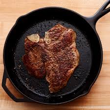

Nathans Famous Steak

This dish is a steak so meaty, so beautiful your pants will be soiled by
the time you finish. Definitely not for the weak of heart (and kidney..)
Ingredients
- 1 Beef Scotch Fillet
- 2 Tsp Butter
- Basil and Italian herbs with a ratio 6/4
- pinch of Salt and Pepper
- extra virgin Olive Oil
- Pour olive oil in the pan
- Sprinkle the salt and pepper on both sides of the steak
- Sear the steak on both sides
- Add butter and herbs to the pan
- Spoon over the steak while finishing cooking
- When the steak is cooked to your liking, take it off the pan
When Searing dont be afraid heat the pan up really high - Nathan